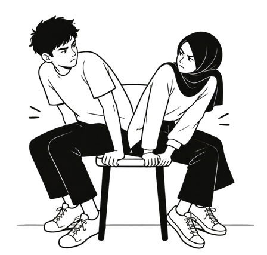
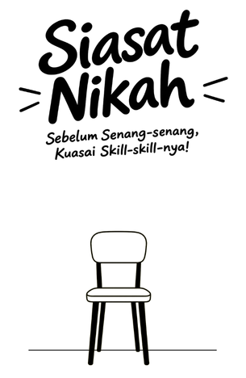
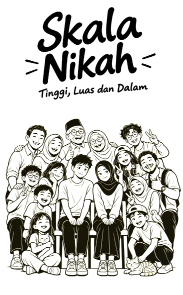

Info Buku
Petunjuk Baca
Penyangkalan/Disclaimer
Siap Nikah
Syarat Mental dan Emosi
Kesiapan mental dan emosi sebelum pacaran
Sebelum menjalin hubungan yang serius, kesiapan mental sering menjadi syarat yang paling diabaikan. Orang yang masih mencari pengakuan dari orang lain biasanya mudah terluka ketika hubungan mulai tidak nyaman.
Kesiapan emosi terlihat dari kemampuan menerima penolakan, mengelola kecewa, dan tetap tenang saat keadaan tidak sesuai harapan. Tanda ini lebih penting daripada sekadar perasaan suka.
Coba jujur pada diri sendiri: apakah kamu mendekati seseorang karena ingin dihargai, atau karena benar-benar ingin membangun sesuatu bersama? Jawaban ini menentukan langkah berikutnya.
-
bisa menerima penolakan tanpa menyalahkan diri sendiri, dan tetap menghargai diri saat hasilnya belum sesuai harapan?
-
tidak mencari pasangan hanya untuk mengisi kesepian, melainkan ingin berbagi hidup dengan seseorang yang tepat?
-
bisa mengelola rasa kecewa dengan cara yang sehat, misalnya dengan bercerita, beristirahat, atau memberi waktu untuk diri sendiri?
-
tahu alasan pribadi yang jelas mengapa ingin menjalin hubungan, dan alasan itu sudah direnungkan dengan jujur?
-
merasa utuh meskipun belum memiliki pasangan, sehingga hubungan menjadi tambahan, bukan sumber kebahagiaan utama?
Syarat Finansial dan Tanggung Jawab
Kemandirian dan tanggung jawab finansial
Pernikahan membutuhkan kemampuan mengelola penghasilan, pengeluaran, dan kebutuhan bersama. Karena itu, kondisi keuangan pribadi perlu dibereskan sebelum memikirkan hubungan yang lebih serius.
Tanggung jawab juga terlihat dari hal-hal kecil, seperti menepati janji, mengatur waktu, dan menyelesaikan kewajiban tanpa harus diingatkan terus-menerus.
Jangan menunggu sempurna untuk mulai. Cukup pastikan kamu sudah mampu berdiri di atas kaki sendiri, sehingga keputusan yang diambil nanti tidak lahir dari tekanan.
-
memiliki penghasilan yang cukup untuk hidup mandiri, tanpa terus bergantung pada bantuan orang lain?
-
mencatat pengeluaran dan memiliki tabungan dasar, sebagai bekal menghadapi kebutuhan yang tidak terduga?
-
menepati janji dan menyelesaikan kewajiban sendiri tanpa harus selalu diingatkan oleh orang lain?
-
memahami kewajiban finansial yang akan ditanggung, termasuk cicilan, tagihan, dan kebutuhan rumah tangga?
-
siap membicarakan keuangan secara terbuka dengan calon, termasuk tentang utang, tabungan, dan rencana bersama?

Siasat Mengenal Calon
Cara mengenal calon lebih dalam
Mengenal calon dengan tujuan menikah berbeda dari sekadar berkencan. Fokusnya bukan pada pesona, melainkan pada kebiasaan, nilai, dan cara seseorang memperlakukan orang lain.
Ajukan pertanyaan tentang rencana hidup, pandangan tentang keluarga, dan cara menyelesaikan konflik. Perhatikan bagaimana ia menjawab, bukan hanya apa yang ia katakan.
Amati juga cara ia bersikap kepada orang yang lebih lemah, kepada keluarganya, dan saat sedang kesal. Sikap seperti ini jauh lebih jujur daripada kesan pertama.
-
sudah membicarakan rencana hidup dengan calon, seperti tempat tinggal, karier, dan target di masa depan?
-
tahu pandangan calon tentang keluarga, peran orang tua, dan hubungannya dengan saudara-saudaranya?
-
pernah melihat cara calon menyelesaikan konflik, bukan hanya saat keadaan sedang tenang?
-
sudah mengenal kebiasaan sehari-hari calon, mulai dari cara ia memulai hari hingga cara ia mengisi waktu luang?
-
tidak terburu-buru menilai calon hanya dari penampilan, dan memberi waktu untuk mengenal karakternya lebih dalam?
Siasat Melibatkan Keluarga
Melibatkan keluarga sejak awal
Keluarga atau orang yang kamu percaya bisa membantu melihat hal-hal yang mungkin terlewat ketika perasaan sedang kuat. Mereka juga membantu menjaga proses tetap sehat dan terarah.
Libatkan mereka sejak tahap perkenalan, dengan cara yang terbuka dan sopan. Jelaskan niat kamu, dan dengarkan masukan mereka dengan kepala dingin.
Keterlibatan keluarga juga membuat proses menuju pernikahan lebih tenang, karena sejak awal sudah ada pihak yang tahu dan ikut mendampingi.
-
sudah memberi tahu keluarga tentang niat saya dengan cara yang sopan dan terbuka?
-
sudah melibatkan orang yang saya percaya dalam proses ini, sebagai pendamping yang bisa memberi pertimbangan?
-
bisa mendengarkan masukan tanpa merasa tersinggung, lalu menimbangnya dengan kepala dingin?
-
sudah menjelaskan tujuan hubungan kepada calon, sehingga kami berjalan dengan arah yang sama?
-
tidak mengambil keputusan besar sendirian, dan selalu membicarakannya bersama orang-orang yang dipercaya?

Skala Kesiapan Diri
Menilai sejauh mana kamu sudah siap
Skala kesiapan diri membantu melihat sejauh mana kamu sudah siap, bukan untuk menghakimi. Setiap orang berada di titik yang berbeda, dan itu wajar.
Gunakan ceklis sebagai cermin. Semakin banyak yang kamu centang, semakin besar kemungkinan kamu siap melangkah. Yang belum tercentang bisa menjadi daftar perbaikan.
Ulangi penilaian ini dari waktu ke waktu. Kesiapan bisa berubah seiring pengalaman, sehingga jangan merasa sudah selesai hanya karena pernah lulus satu kali.
-
mengenal kekuatan dan kelemahan diri dengan jujur, serta tahu bagian mana yang masih perlu diperbaiki?
-
bisa mengatur waktu dan kebutuhan pribadi dengan seimbang, tanpa mengorbankan kesehatan dan tanggung jawab?
-
memiliki target hidup yang jelas untuk lima tahun ke depan, baik di bidang pekerjaan, pendidikan, maupun keluarga?
-
siap berubah jika ada hal yang perlu diperbaiki, dan tidak merasa rendah diri saat menerima masukan?
-
tetap sehat secara mental tanpa bergantung pada pasangan untuk merasa aman, dihargai, atau bahagia?
Skala Kesiapan Hubungan
Menilai kualitas hubungan kalian
Kesiapan hubungan dilihat dari kualitas komunikasi, kesepakatan, dan rasa hormat di antara dua orang. Skala ini membantu menilai apakah hubungan sudah berjalan di jalur yang sehat.
Perhatikan apakah kalian bisa membicarakan batas, rencana, dan perbedaan tanpa saling menyerang. Hubungan yang siap menuju pernikahan biasanya lebih tenang meski sedang berbeda pendapat.
Jika beberapa ceklis belum tercentang, bukan berarti hubungan harus berakhir. Itu bisa menjadi bahan percakapan yang jujur untuk memperbaiki hubungan.
-
sudah sepakat tentang batas fisik dan waktu bersama, sehingga kedua pihak merasa dihargai dalam hubungan ini?
-
bisa membicarakan perbedaan pendapat tanpa saling menyerang, dan tetap saling mendengarkan sampai menemukan titik temu?
-
sudah sepakat tentang rencana masa depan secara garis besar, dan kedua pihak merasa nyaman dengan arah yang dipilih?
-
tahu cara menyampaikan rasa tidak nyaman dengan jujur, tanpa menyindir atau menyimpan dendam?
-
siap jujur menyampaikan batas yang dilanggar, dan siap pula mendengar batas yang disampaikan pasangan?